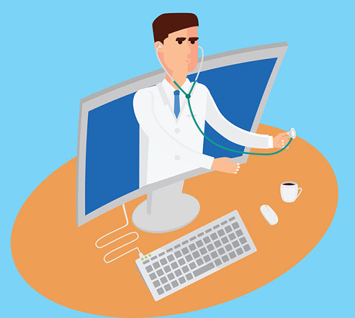
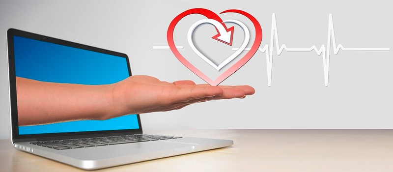

Información

¿Qué es la Telemedicina?.
La Telemedicina es un mecanismo alternativo de prestación de servicios de medicina a distancia, apalancado en la tecnología, la cual hace posible la interacción médico-paciente en tiempo real y a distancia.

Consulta Médica en Línea.
Nos encontramos trabajando 24/7 para atender la emergencia sanitaria que enfrentamos por el COVID-19, al momento estamos teniendo demoras en tiempo de atención. Vamos a atenderte lo más pronto posible. ¡Todos estamos juntos en esto!
Beneficios de Consulta Médica en Línea
Conectividad
Acceso cuando lo necesites desde cualquier lugar con conexión web
Accesibilidad
Acceso cuando lo necesites desde cualquier lugar con conexión web
Promociones
Reducción en gastos de traslado para pacientes y familiares.